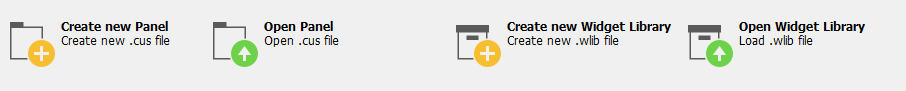
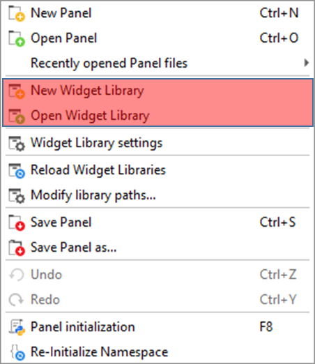
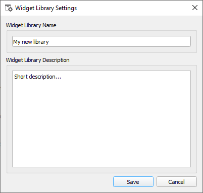
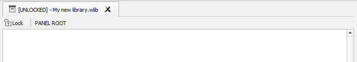
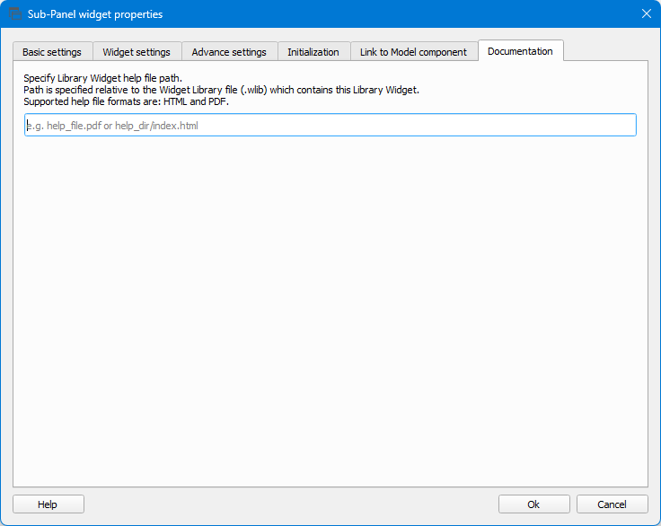
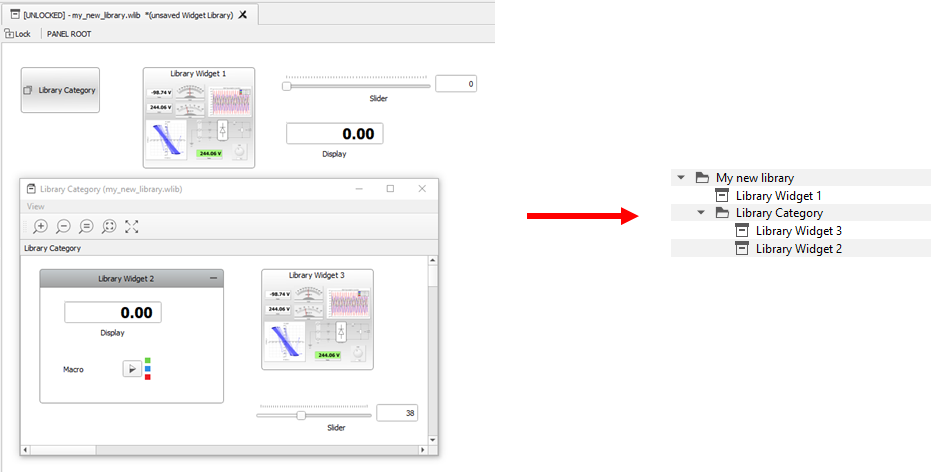

This section describes Library Widgets, and how to create, edit, categorize, and update a Widget Library.
Creating and editing a Widget Library
To create (or edit) a Widget Library or Library Widgets inside a library, you need to open the
desired Model (*.cpd file) in HIL SCADA and then click on the Create new
Widget Library or Open Widget Library button
located in the central panel (Figure 1) or select
New Widget Library or Load Widget
Library actions from the Panel toolbar menu (Figure 2).Figure 1. Create or Edit Widget Library

Figure 2. Create or Edit Widget Library from Panel menu

When creating a new Widget Library, specify the Library name and a short description
(Figure 3). This can be changed later by selecting the Widget Library
settings Panel menu action.Figure 3. Widget Library Settings

The same specialized Library Panel is used and automatically opened when creating
a new, or editing an existing,
Widget Library (Figure 4).Figure 4. Library Panel

Note: This specialized Panel is used only as an editor for creating a new or changing
an existing Widget Library. You cannot execute Macro actions or start/stop a simulation
when this Panel is opened and selected.
Split Widget Library into multiple files
A Widget Library can be split into multiple *.wlib library files, with each file holding one library part. After you create
an initial Widget Library file, you can create additional library parts by:
Creating a new Widget Library (*.wlib) file for your new library part.
Setting the Widget Library Name to be the same as in the initial Widget Library
. All Widget Libraries with the
same library name will be merged into a single Widget Library during the library
resolving phase.
Note: In order to merge library parts
correctly, all parts of the Widget Library must have uniquely named Library
widgets.
Creating a Library Widget in a Widget Library
To create a Library Widget
inside a Widget Library, you should use a Group or
Sub-Panel widget as a basis for your library widget,
and simply place your desired widget(s) inside of them.
Note: Only top-level Group and
Sub-Panel widgets are Library widget candidates. Top-level widgets are widgets
located on the main canvas or on the root of a Library Category widget. Regular
widgets located outside of Group or Sub-Panel widgets won't be a treated as Library
Widgets.
Note: You can use any Core (regular) Panel widget from the Library Explorer Dock
and put them in a Group or Sub-Panel widget. You also can use other Library widgets
from other Widget Libraries to create your own Library Widget.
Each Library Widget in a Widget Library can have its own
documentation that can be specified inside the Library Widget's
properties dialog (Figure 5).
Figure 5. Library Widget Documentation

Note: Only .html and .pdf file formats are supported.
Note: Use of a Fragment Identifier is supported for pointing to a specific section of
an existing .html file.
For example:
help_dir/help_file.html#section_name
Library Category widget
You can use a
Library Category widget to organize Library Widgets into categories (Figure 6).
Note: Library
Category widgets can only be used inside the Library Panel and cannot be added to a regular
Panel.
Note: Library Category widgets can only be added to the Library Panel root
canvas or inside another Library Category widget. They cannot be added to Group or
Sub-Panel widgets.
Figure 6. Hierarchically organized top level widget candidates

Reload Widget libraries
Once you create or edit a Widget Library (or you create a new Library widget or edit an
existing widget inside a Widget Library), you need to reload all Widget Libraries.
To do that click on the button located in the Library
dock or select the Reload Widget Libraries action from the
Panel menu.
Note: Libraries are reloaded automatically on first Model load.
Note: You can only reload Libraries while the simulation is not
running.
Note: After Widget Libraries are reloaded, you can chose to
automatically reload all Library Widgets located on the opened regular and
Library Panels to make sure your Panels (or Widget Libraries) are up to
date.
Note: Libraries should be reloaded when a package is installed/uninstalled
in the Package Manager.